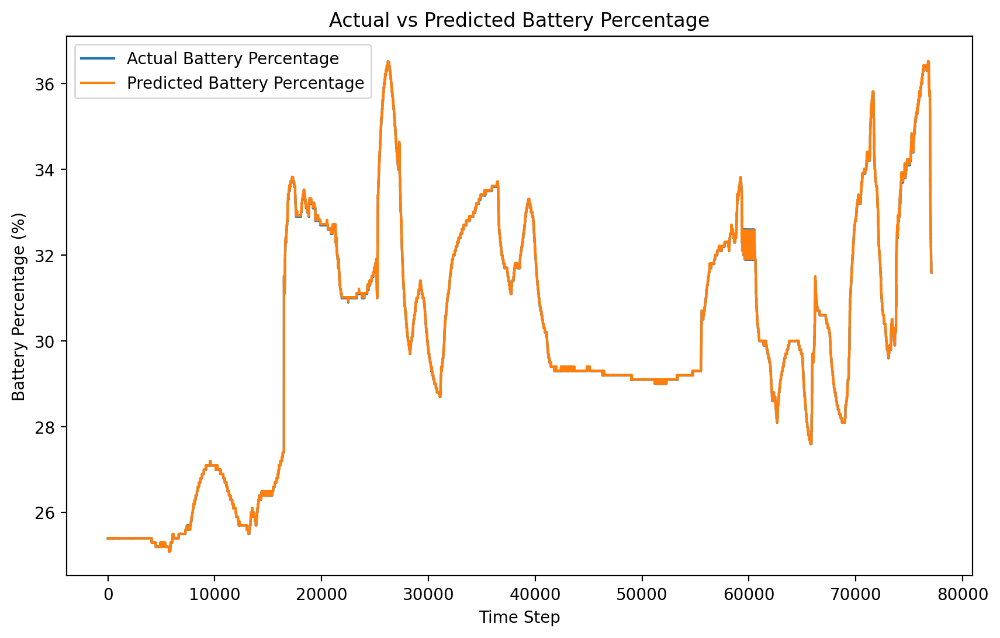
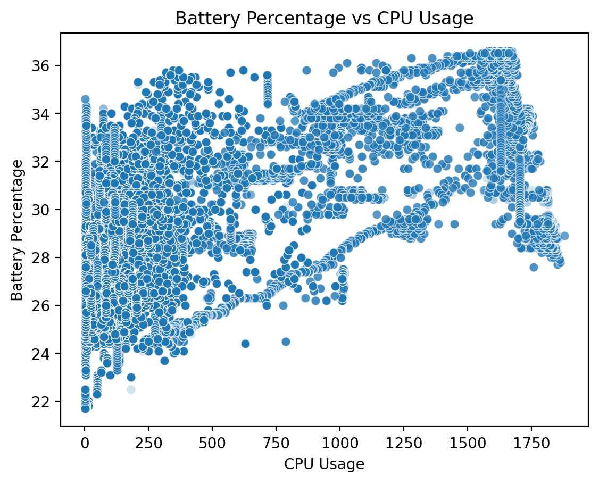
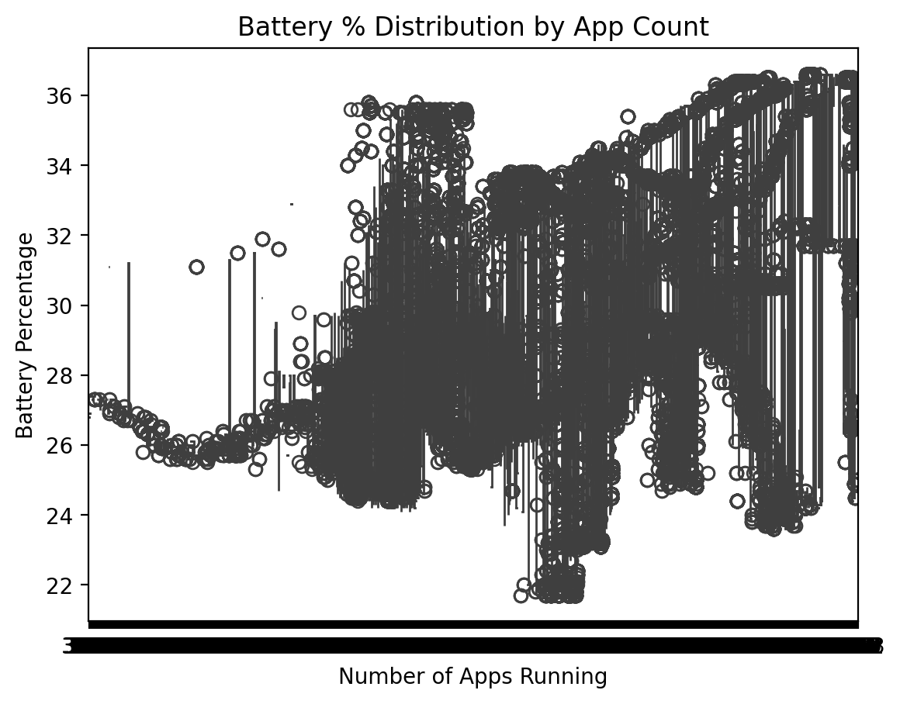
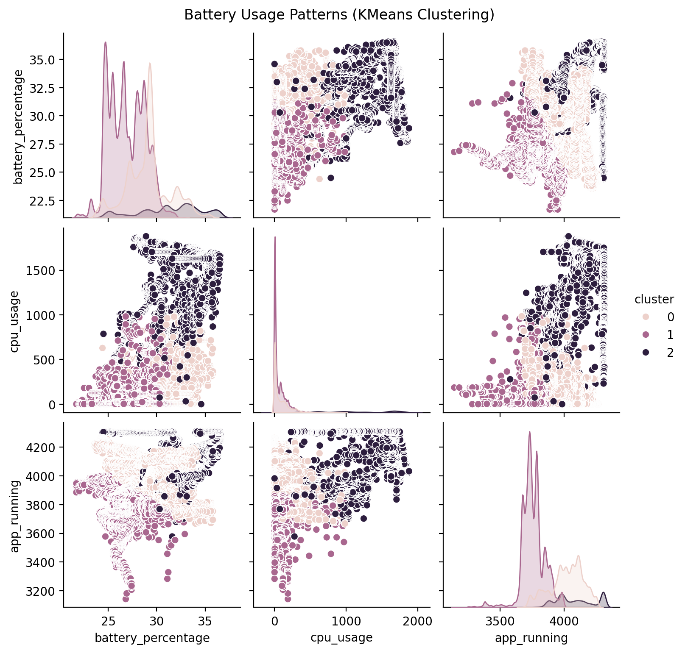

Time-series deep learning · Reference run
Forecasting smartphone battery degradation with an LSTM
A single-layer LSTM learns one-step-ahead battery percentage from four telemetry channels, then rolls its own predictions forward for a 24-step forecast. Every number on this page comes from the reference notebook run in the repository.
- Samsung SM-A910F · single device
- 385,429 sensor readings
- Android 8.0.0 · 5,000 mAh Li-ion
- TensorFlow / Keras
Training & validation loss
Mean-squared error per epoch, log scale · 30 epochs · batch size 32
Loss collapses by three orders of magnitude within five epochs and the validation curve tracks training closely — no sign of overfitting.
Feature correlations
Pearson r between the four model inputs
CPU usage and voltage move together (r = 0.79); battery percentage correlates only moderately with any single channel.
24-step forecast
Last 50 readings and the recursive forecast beyond them
The model expects the discharge to level off just above 31.6%. Future exogenous channels are held at zero — see the notes below.
Pipeline
From raw Kaggle export to forecast — each stage is an importable module in
src/battery_forecast.
Ingest
385,429 rows read with descriptive names for 15 raw columns; the unusable header row is skipped.
Clean
Numeric coercion, boolean mapping, timezone-aware timestamps, fully-empty columns dropped.
Scale & window
Four channels min-max scaled to [0, 1]; sliding 24-step windows labelled with the next battery reading.
Train
LSTM(50) → Dense(1), Adam on MSE, 30 epochs; chronological 80/20 split with 10% validation.
Evaluate
Held-out tail of the series; test MSE below 10⁻⁴ in scaled units.
Forecast
24 recursive steps: each prediction is rolled back into the input window.
Architecture
| Input | 24 timesteps × 4 features |
| Recurrent layer | LSTM · 50 units · ReLU |
| Head | Dense(1) — next battery % |
| Parameters | ≈ 11K trainable |
Run configuration
| Optimizer / loss | Adam / MSE |
| Epochs · batch | 30 · 32 |
| Split | 80/20 chronological · 10% val |
| Features | battery %, apps, CPU, voltage |
From the notebook
Figures exported directly from the executed notebook
(scripts/export_notebook_assets.py).




Reading the results honestly
Near-zero MSE ≠ oracle
Battery percentage moves slowly relative to the sampling rate, so closely tracking the previous value already yields a tiny one-step error. Benchmark against a persistence baseline before claiming skill.
One device only
All 385K readings come from a single Samsung SM-A910F. Nothing here is evidence of generalization to other hardware or usage patterns.
Frozen future inputs
During recursive forecasting the non-target channels are held at zero, which limits long-horizon realism. Forecasting exogenous inputs jointly is the natural next step.